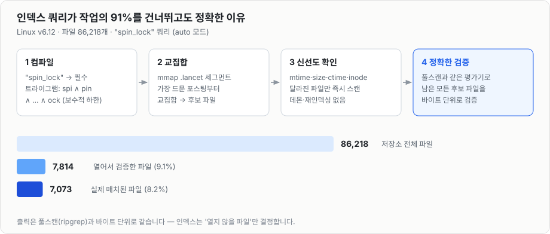

핵심 개념
.lancet 트라이그램 LSM 인덱스와 최신성 보장
상주 워처 데몬 없이도 Scan == Auto를 보장하는 이유와 --trust-index의 올바른 쓰임새.
기존 인덱스 기반 검색 도구는 백그라운드 워처가 따라잡을 때까지 낡은 결과를 내거나, 인덱스 내용만으로 근사치를 반환하곤 합니다. Lancet은 반대로 설계했습니다: 인덱스는 열지 않아도 되는 파일만 거릅니다.

"spin_lock" auto 모드 실측: 7,814개 후보만 열어 7,073개 정확히 일치.건전한 트라이그램 컴파일 & 동일 평가기 검증#
LQL, lancet rg 정규식 HIR, 리터럴이 있는 lancet ast 패턴, lancet refs까지 모두 필수 바이트 트라이그램 논리식(및 fuzzy()용 건전한 q-gram 하한 AtLeast(k))으로 낮춰집니다. 필수 트라이그램이 없는 파일은 수학적으로 매치할 수 없으므로 건너뛰어도 누락이 발생하지 않습니다.
인덱스에서 걸러진 후보와 수정된 파일은 인덱스 없는 풀스캔과 완전히 동일한 평가기로 검증합니다. 따라서 구조적으로 Scan == Auto가 성립합니다.
데몬 없이 auto 모드가 수정을 즉시 감지하는 법#

기본 auto 모드는 파일 메타데이터를 한 번 순회하며 인덱스된 파일마다 다음 4가지 속성을 대조합니다:
mtime+size+ctime+inode(Unix/macOS)- 더해 racy-timestamp 검사: 인덱스 기록 시각과 같은 타임스탬프 구간에서 바뀐 파일은 무조건 stale로 보고 실시간 스캔합니다.
덕분에 길이가 같은 수정(size 동일), mtime을 되돌린 트릭(ctime/inode로 포착), 밀리초 미만 연속 수정도 놓치지 않습니다.
Windows 플랫폼의 정직한 한계
Rust 표준 라이브러리는 Windows에서 ctime과 inode를 안정적으로 노출하지 않고 mtime과 size만 제공합니다. 따라서 Windows에서 파일 크기와 mtime을 동시에 유지한 채 덮어쓰는 특수한 경우에는 lancet index 또는 --no-index가 필요합니다.
auto vs --trust-index vs --no-index#
| 모드 | 디스크 stat 순회 | 수정 파일 실시간 스캔 | 지연 (Linux 8.6만 파일) | 추천 용도 |
|---|---|---|---|---|
auto (기본값) | 예 (~100 ms) | 예 | ~148 ms (희귀 리터럴) | 실제 개발 & AI 에이전트 작업(항상 최신) |
--trust-index | 아니오 | 아니오 | ~40 ms (0건 시 3 ms) | 인덱스가 최신임이 확실한 초대형 저장소 읽기 전용 탐색 |
--no-index | 전체 스캔 | 예 (모든 파일) | ~1,113 ms | 디버깅, 기준선 비교, 쓰기 불가 환경 |
LSM 세그먼트, 상위 인덱스 탐색 & 컴팩션#
- 디스크 구조:
PATH/.lancet안에 불변 LSM 세그먼트(LANCET04), 삭제 툼스톤, mmap 포스팅 리스트로 저장됩니다. - 상위 디렉터리 자동 탐색:
src/query/안에서 실행해도 상위 저장소 루트의.lancet를 자동으로 찾아 사용합니다(--index-dir로 재지정 가능). - 증분 갱신 및 유지보수:
lancet index .는 바뀐 파일만 새 세그먼트로 추가하고,lancet index --compact는 세그먼트를 병합하고 툼스톤을 정리하며,--rebuild는 처음부터 다시 만듭니다. - 선택도 진단:
lancet status로 인덱스·stale 파일 수를 확인하고,lancet explain '<QUERY>'로 추출된 트라이그램과 후보 비율을 볼 수 있습니다.